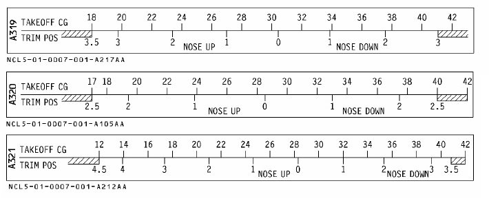

DIFSRIP CONCEPT
- Select SID: LAT REV on departure -> RWY -> SID -> TMPY INSERT
- Select airways: LAT REV on last SID's waypoint -> AIRWAYS -> write airways and waypoints -> TMPY INSERT
- Select STAR: LAT REV on arrival -> APPR -> STAR -> TMPY INSERT
- Check CSTR
About the discontinuities:
- Sometimes, you will find a discontinuity between the STAR and the APPR. This is because you will need ATC Vectors to fly that part. If you do nothing when reaching the waypoint before the discontinuity, the aircraft will continue flying on present heading indefinitely.
- You should use HEADING or DIR TO. It is usually not a good idea to clear the discontinuity.
If we don't have any E/O SID Chart, we can create one ourselves. For example, climb on rwy heading, turn to downwind, then fly to an IAF. You can create a different one based on your criteria, surrounding terrain, MSA...
1. COPY ACTIVE
2. Create "climb on rwy heading": Choose a point near the runway (VOR on airport) or the airport ICAO itself, write POINT/BRG/DIST and insert it below the departure runway. For Example LEGE/194/10 will create a waypoint 10NM out from LEGE RWY 19 heading.
3. Create turn to downwind. To create a waypoint, we will reference the last one. For example PBD01/284/5 will create a second waypoint 5NM 90º to the right of the previous one, being the crosswind leg. PBD02/014/10 will create the downwind leg, and so on. At any moment, you can write the name of an actual waypoint, navaid or IAF.
Using this method you can create as many waypoints as you consider. When you have an emergency, you will be able to fly them by just activating the SEC F-PLAN.
4. Now, selecting LAT REV on our last waypoint, we will select NEW ARR.
5. Selecting LAT REV on the new arrival we can select our APPROACH.
6. Finally we can enter any necessary data on the APP PERF PAGE.
1. Set ZFW and BLOCK according to flightplan, and ZFWCG according to your sim/addon fuel panel.
(Every Sim/addon is different. Some of them will calculate these values automatically. Else, you will usually find the ZFWCG on the same place where you inserted your fuel and pax during boarding phase)
2. Adjust fuel info according to flightplan (taxi, route reserve, final reserve).
About FLEX TEMP and Vspeeds: Here, every Sim/addon works also differently. Most of them will have a dedicated panel where it will tell you everything (Fenix, FBW, Toliss...). Some of them will send you the data directly as a "company message".
- Please reffer to your addon manual for this part. On Aerosoft, for example, it will automatically calculate these values as soon as FLAPS is set.
If your aircraft does not have an integrated PERF CALCULATOR, you can use SimBrief's PERF TOOL.
- TRANS ALT depends on your airport , check charts.
- THR RED/ACC will depend on the NADP in use: for NADP2 = usually 1500 AAL both. For NADP1 = THR RED 1500, ACC 3000 AAL.
- Check Charts for NADP in use.
- ENG OUT ACC is uauslly the same as THR RED, 1500 AAL.
About THS position... if your aircraft does not calculate it automatically, you will need the Takeoff Weight CG and the following chart:

If we go into the CLB PAGE, we can also set a PRESEL SPEED, useful if we want to keep a lower speed during early climb, instead of aiming directly for standard speed (250KT).
This is commonly used on SID's sharp turns, airspace shared with VFR traffic... and we can use our clean speed.
Whenever we are climbing and we want to get rid of our PRESEL, we just have to push the speed knob on the FCU and engage managed speed mode.